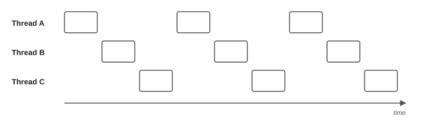
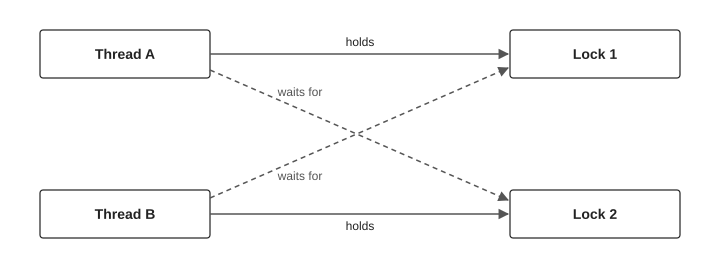

Concurrency and multithreading are fundamental concepts in software development that allow programs to manage multiple tasks efficiently, improve responsiveness and utilize system resources effectively.
Java multithreading and concurrency are fundamental concepts for building efficient and responsive applications, especially in modern multi-core environments.
Multithreading refers to the ability of a program to execute multiple parts of its code (called threads) concurrently within a single process. Which allows a program to perform multiple tasks seemingly simultaneously, improving responsiveness and resource utilization.
- Better use of a single CPU
- Better use of multiple CPUs or cores
- Responsiveness - Long tasks run in the background, so the UI or the request listener never freezes.
- Fairness - Each client gets its own thread, so one slow request cannot hold up everyone else.
Concurrency is the ability of multiple threads to access and operate on shared resources (memory or files) at the same time. While multithreading enables the execution of multiple threads, concurrency addresses the challenges that arise when these threads interact with shared resources.
Without proper handling, concurrent access can lead to issues such as:
- Race ConditionsWhen the outcome of a program depends on the unpredictable timing of operations by multiple threads accessing shared data.
- DeadlocksWhen two or more threads are blocked indefinitely, waiting for each other to release resources.
- Data InconsistencyWhen shared data is modified by multiple threads in an uncoordinated manner, leading
to incorrect or unexpected values.
The following concepts are closely related but are not interchangeable.
| Concept | Definition |
|---|---|
| Process | A program in execution, with its own virtual address space and OS-managed resources |
| Thread | A schedulable execution path within a process |
| Concurrency | Multiple tasks make progress during overlapping time periods |
| Parallelism | Multiple tasks execute at exactly the same time |
| Multithreading | Using multiple threads within a process |
| Multiprocessing | Using multiple processes to perform work |
| Synchronization | Coordinating concurrent execution and access to shared resources |
| Context Switching | Suspending one execution context and resuming another |
| CPU Scheduling | Deciding which runnable thread or task receives CPU time |
Concurrency is about structure: several tasks are in progress during the same period and their steps may interleave, even on a single CPU core. Parallelism is about execution: several tasks literally run at the same instant on different cores.
A program can be concurrent without being parallel (one core switching between threads) and parallel without much concurrency design (splitting one big computation across cores). Java’s concurrency tools make the first safe and the second practical.
Concurrency
Concurrency means multiple tasks are in progress during overlapping periods. They do not necessarily execute simultaneously.
For example, a single CPU core can execute three threads by rapidly switching between them.

Only one thread executes at any instant, but all three make progress through interleaving.
Parallelism
Parallelism means two or more tasks execute simultaneously, usually on different CPU cores.
All three threads execute at the same time on separate cores.
Differences
| Aspect | Concurrency | Parallelism |
|---|---|---|
| Goal | Manage multiple tasks in progress | Execute tasks simultaneously |
| CPU cores | One is sufficient | Multiple execution resources needed |
| Execution | Interleaved or simultaneous | Simultaneous |
| Main benefit | Responsiveness, efficient waiting | Throughput, faster computation |
| Main challenge | Coordination and correctness | Coordination, load distribution |
Important: Multithreading enables concurrency, but it does not guarantee parallelism. Whether threads run in parallel depends on available CPU cores, scheduling, and resource constraints.
Advantages
- ResponsivenessLong-running work runs on background threads, so the user interface or request handler is never frozen.
- Better CPU UtilizationWork spreads across all cores instead of leaving most of them idle.
- Higher ThroughputWhile one thread waits on I/O, others keep doing useful work.
- Natural ModellingIndependent activities, such as serving many clients, map directly to independent threads or tasks.
Disadvantages
- Hard to Reason AboutThe number of possible interleavings explodes, so correctness can no longer be checked by reading the code top to bottom.
- Non-Deterministic BugsRace conditions and deadlocks may appear only under load or on certain machines and are hard to reproduce and test.
- OverheadThread creation, context switching and lock contention cost time and memory; too many threads can make a program slower.
- Shared-State ComplexityEvery piece of shared mutable data needs a clear protection strategy, which adds design and review effort.
The operating system schedules runnable threads across available CPU cores.
CPU scheduler
Its responsibilities include selecting runnable threads, assigning CPU time, enforcing priorities and scheduling policies, and balancing tasks across cores.
Common scheduling algorithms include:
| Algorithm | Description |
|---|---|
| FCFS | First-Come, First-Served |
| SJF | Shortest Job First |
| SRTF | Preemptive Shortest Remaining Time First |
| Round Robin | Each task receives a CPU time quantum |
| Priority Scheduling | Higher-priority tasks are favored |
| Multilevel Feedback Queue | Dynamically adjusts task scheduling queues/priorities |
| Fair Scheduling | Attempts to distribute CPU time fairly |
Real operating systems use more sophisticated scheduling policies, including fairness and real-time mechanisms.
Context switching
Context switching is the process of suspending one thread and resuming another.

The OS typically needs to preserve and restore thread execution state such as registers, stack pointer, and program counter. Switching between processes may also require changing address-space context.
Context switching has overhead, including scheduler work, cache disruption, and possible translation lookaside buffer (TLB) effects.
Too many runnable threads can therefore degrade performance rather than improve it.
Concurrency introduces correctness and progress problems when threads interact.
| Problem | Explanation | Example |
|---|---|---|
| Race Condition | Outcome depends on execution order | Two threads updating a balance |
| Data Race | Conflicting unsynchronized memory accesses | One thread reads while another writes |
| Deadlock | Threads wait indefinitely for each other | Opposite lock acquisition order |
| Livelock | Threads remain active but make no progress | Continually retrying and backing off together |
| Starvation | A thread is continually denied needed resources | Low-priority task rarely scheduled |
| Priority Inversion | Lower-priority thread delays higher-priority thread | Low-priority owner holds required lock |
| Visibility Problem | Other thread does not observe a write as required | Stop flag update not seen |
| Atomicity Violation | Multi-step operation is interrupted | Lost increment |
| Ordering Problem | Operations are observed in unexpected order | Publication without proper synchronization |
| Contention | Threads compete for the same resource | Many threads acquiring one mutex |
Synchronization coordinates concurrent threads to preserve correctness.
| Mechanism | Purpose |
|---|---|
| Mutex / Lock | Allows exclusive access to a critical section |
| Semaphore | Controls access using a permit count |
| Monitor | Combines mutual exclusion with condition waiting |
| Condition Variable | Enables threads to wait for a state change |
| Read-Write Lock | Allows concurrent readers, exclusive writers |
| Spinlock | Repeatedly checks lock availability without sleeping |
| Atomic Operation | Performs certain operations indivisibly |
| Barrier | Waits until participating threads reach a common point |
| CountDown Latch | Waits for a specified number of completion signals |
| Thread-Safe Queue | Safely transfers data between producer and consumer threads |
Multithreading requires understanding how writes become visible to other threads.
Modern CPUs use registers, caches, and memory-ordering optimizations. Compilers and runtimes can also reorder operations within the guarantees of their language memory models.
Three important properties are:
- Atomicity: An operation cannot be observed partially.
- Visibility: Changes performed by one thread become observable by another under appropriate synchronization.
- Ordering: Operations are observed according to permitted memory-model rules.
The Java Memory Model uses the happens-before relationship to specify when actions are ordered and writes must be visible.
Deadlock occurs when threads cannot proceed because they are waiting for resources held by each other.

Four necessary conditions for classical resource deadlock (Coffman conditions):
- Mutual Exclusion: A resource cannot be used simultaneously by multiple owners.
- Hold and Wait: A task holds resources while waiting for others.
- No Preemption: Resources cannot be forcibly taken away.
- Circular Wait: A cycle of tasks waits on one another.
Common approaches to avoid or manage deadlocks include global lock ordering, timeouts, minimizing lock scope, deadlock detection, and avoiding nested locking where feasible.
These are different mechanisms for organizing concurrent execution.
| Aspect | Multithreading | Multiprocessing | Asynchronous / Event-driven |
|---|---|---|---|
| Execution units | Threads | Processes | Tasks and callbacks |
| Memory | Shared process memory | Usually isolated address spaces | Depends on runtime |
| Communication | Shared objects, queues | IPC, sockets, shared memory | Futures, events, channels |
| Scheduling | OS or runtime | OS | Event loop or runtime |
| Parallel CPU execution | Possible | Possible | Depends on execution resources |
| Major advantage | Efficient shared-state collaboration | Isolation and fault containment | Efficient handling of many waiting operations |
| Major challenge | Races and synchronization | IPC overhead and coordination | State management and blocking operations |
Asynchronous programming does not necessarily require multiple threads, although the implementation may use them.
Creating a new OS thread for every task can be expensive. Thread pools reuse worker threads.

ExecutorService executor = Executors.newFixedThreadPool(4);
for (int i = 0; i < 10; i++) {
int taskId = i;
executor.submit(() -> {
System.out.println("Task {taskId} executed by {Thread.currentThread().getName()}");
});
}
executor.shutdown();Ten tasks are submitted, but at most four pool worker threads execute tasks concurrently.
The executor manages queuing and scheduling work onto its workers.
For production systems, queue bounds, rejection behavior, shutdown and workload characteristics also matter.
Understanding workload type is essential when choosing a threading model.
- CPU-bound
Tasks spend most of their time executing computations.
Examples: image processing, compression, numerical calculations.
Often benefits from parallel execution across CPU cores. - I/O-bound
Tasks spend substantial time waiting for external operations.
Examples: network requests, database queries, file I/O.
Often benefits from asynchronous I/O or lightweight concurrency.
For CPU-bound tasks, more runnable threads than available CPU execution capacity can increase contention and context switching without improving throughput.
For I/O-bound tasks, a higher number of concurrent operations can improve resource utilization because some tasks are waiting while others run.
These topics become especially important when designing high-performance concurrent systems.
| Area | Concepts |
|---|---|
| Scheduling | Preemption, time quantum, fairness, CPU affinity, work stealing |
| Thread coordination | Mutexes, semaphores, barriers, monitors, condition variables |
| Lock-free programming | Compare-and-Swap (CAS), lock-free queues, ABA problem |
| Memory architecture | CPU caches, cache coherence, memory barriers, false sharing |
| Concurrent data structures | Concurrent hash maps, blocking queues, ring buffers |
| Progress guarantees | Blocking, lock-free, wait-free algorithms |
| Thread management | Thread pools, virtual threads, thread-local storage |
| Communication patterns | Producer–consumer, pipeline, fork–join, actor model |
| Performance | Contention, context-switch overhead, Amdahl’s Law |
| Correctness | Safety, liveness, linearizability, happens-before |
| Problem | Cause | Preferred mitigation |
|---|---|---|
| Lost update | Nonatomic read-modify-write | Atomic variable or lock |
| Visibility bug | Missing happens-before relationship | Volatile, locks, or atomics |
| Deadlock | Circular lock dependencies | Consistent lock ordering, bounded acquisition |
| Starvation | Repeated scheduling or lock denial | Fairness where appropriate, bounded workloads |
| Livelock | Threads repeatedly react without progress | Backoff and bounded retries |
| Thread leak | Unbounded creation or missing shutdown | Structured executor lifecycle |
| Queue growth | Producers exceed consumption | Bounded queues, admission control |
| Lock contention | Excessive exclusive access | Reduce critical sections, partition state |
| Lost notification | Incorrect wait/notify protocol | Predicate loops, higher-level synchronizers |
| ABA problem | Value changes and returns before CAS | Versioned atomic references |
| ThreadLocal leak | Pooled worker retains request state | remove() in finally |
| Unsafe publication | Shared object exposed without proper synchronization | Final fields, safe publication |
| False sharing | Independent hot fields occupy the same cache line | Data-layout techniques, measurement |
| Pool starvation | Tasks block awaiting other tasks in the same constrained pool | Separate pools or redesign dependencies |
- Foundation: Process vs. Thread → Concurrency vs. Parallelism → Thread Lifecycle
- Operating System Internals: CPU Scheduling → Context Switching → Preemption → Kernel/User Threads
- Shared-Memory Concurrency: Race Conditions → Critical Sections → Mutex → Semaphore → Monitors
- Correctness and Memory: Atomicity → Visibility → Ordering → Memory Models → Deadlock
- Advanced Synchronization: CAS → Atomic Variables → Lock-Free Algorithms → Concurrent Data Structures
- Practical Multithreading: Thread Pools → Executor Framework → Future → CompletableFuture → Fork/Join → Virtual Threads
- Performance and Architecture: CPU-bound vs. I/O-bound → Contention → Thread Pool Sizing → Asynchronous Architecture
Concurrency is about managing multiple tasks that are in progress.
Parallelism is about executing multiple tasks simultaneously.
Multithreading is one mechanism for implementing concurrency.
The OS schedules threads, switches execution contexts, and manages resources.
Applications use synchronization and memory-model guarantees to make shared-state interaction correct.
For practical systems programming, the most important chain of understanding is:
Threads → Scheduling → Shared Memory → Race Conditions → Synchronization → Memory Visibility → Deadlock → Thread Pools → Performance.
Once these concepts are clear, advanced subjects such as Java concurrency utilities, lock-free data structures, asynchronous programming, and distributed coordination become considerably easier to understand.
To manage concurrency and prevent these issues, Java provides various synchronization mechanisms:
synchronizedkeyword: Used to create synchronized blocks or methods, ensuring that only one thread can execute a critical section of code at a time.Lockinterface: Offers more flexible and powerful locking mechanisms thansynchronizedblocks, including reentrant locks, read-write locks and condition variables.Semaphore: Controls access to a limited number of resources.Atomicclasses: Provide atomic operations on single variables, ensuring thread-safe updates without explicit locking.java.util.concurrentpackage: Offers a rich set of high-level concurrency utilities, includingExecutorServicefor managing thread pools,CountDownLatch,CyclicBarrierandBlockingQueuefor inter-thread communication and coordination.
public class Counter {
private int count;
public void increment() {
count++; read, add, write: three steps
}
public int get() {
return count;
}
}
void main(String[] args) throws Exception {
Counter counter = new Counter();
Runnable task = () -> {
for (int i = 0; i < 10_000; i++)
counter.increment();
};
Thread a = new Thread(task);
Thread b = new Thread(task);
a.start();
b.start();
a.join();
b.join();
System.out.println(counter.get()); often less than 20000
}count++ reads the value, adds one and writes it back.
If both threads read the same value before either writes, one increment is lost, so the final total changes from run to run.
This is a race condition: the result depends on how the two threads happen to interleave.
public class SynchronizedCounter {
private int count;
public synchronized void increment() {
count++; one thread at a time
}
public synchronized int get() {
return count;
}
}
public class AtomicCounter {
private AtomicInteger count = new AtomicInteger();
public void increment() {
count.incrementAndGet(); lock-free compare-and-set
}
public int get() {
return count.get();
}
}synchronized makes the read-add-write a single critical section and also guarantees that get() sees the latest value.
AtomicInteger does the same update without locking, using a hardware compare-and-set that retries if another thread changed the value first.
Either version always prints 20000.
void main(String[] args) {
AtomicInteger counter = new AtomicInteger();
try (ExecutorService pool = Executors.newFixedThreadPool(4)) {
for (int i = 0; i < 1_000; i++) {
pool.submit(counter::incrementAndGet);
}
} close() waits for every submitted task
System.out.println(counter.get()); always 1000
}Instead of creating a thread per task, four pooled threads take turns running the 1,000 submitted tasks.
Since Java 19, ExecutorService is AutoCloseable: leaving the try block shuts the pool down and waits for running tasks.
Swapping in Executors.newVirtualThreadPerTaskExecutor() runs each task on its own virtual thread.
- Minimize shared mutable state
Design classes to be immutable or minimize the amount of mutable data shared between threads. - Use appropriate synchronization
Choose the right synchronization mechanism based on the specific needs of the application. - Avoid deadlocks
Implement careful resource ordering and timeout mechanisms to prevent deadlocks. - Test thoroughly
Concurrent programs can be complex and require extensive testing to ensure correctness and performance.